Robots operating in unstructured environments may fall or overturn, and recovering an upright posture is critical for sustained operation. Inspired by the feline righting reflex, in which coordinated body and tail motions contribute to aerial reorientation, this work investigates the role of spine and tail actuation in aerial self-righting. We hypothesized that adding an actuated tail improves self-righting performance despite its added mass and mechanical complexity. To evaluate this hypothesis, we present MeowMentum, a 1.86 kg self-righting robot that combines a two-degree-of-freedom (2-DoF) actuated spine with a one-degree-of-freedom (1-DoF) actuated tail, using onboard sensing and closed-loop control. Reinforcement learning-based controllers were trained in a physics simulator and deployed zero-shot on the physical robot. MeowMentum achieved feet-down orientation within 1 m of free fall from a range of initial orientations. With active spine motion in both morphologies, we compared the matched tail and no-tail configurations across pitch and roll release conditions. Adding tail actuation improved self-righting performance overall and across roll releases, while its additional benefit across pitch releases was less clear. These results indicate that the contribution of tail actuation to self-righting depends on the initial release orientation.
Drops
Replay
Robot


- Mass
- 1.86 kg, or 1.71 kg without the tail
- Length
- 58.7 cm, or 44.7 cm without the tail
- Spine
- Pitch (Pololu 4844) and coupled roll (2 × Pololu 4862)
- Tail
- 1-DoF pitch (Pololu 4862), adjustable tip mass
- Compute
- Raspberry Pi runs the policy; two Teensy boards run the motor loops
- Sensing
- BNO085 IMU in the front body, encoders on every joint
- Drivers
- VNH5019 motor drivers in the front and rear bodies
- Power
- 11.1 V 3S LiPo, 2200 mAh
Method
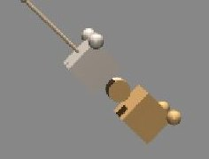
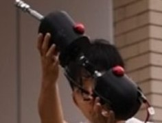
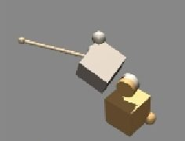
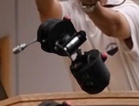
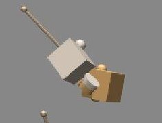
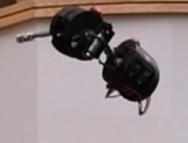
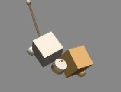
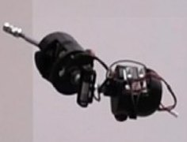
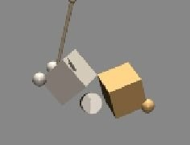
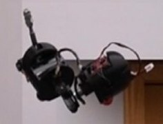
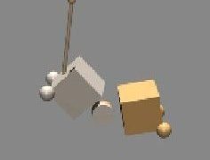
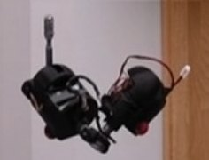
Results
| Analysis | No tail | With tail | Adjusted tail effect | 95% HC3 CI | HC3 p | Holm p | Blocked permutation p |
|---|---|---|---|---|---|---|---|
| All releases | 0.688 ± 0.155 (37) | 0.798 ± 0.090 (35) | +0.157 | [0.062, 0.252] | 0.0016 | – | 0.0008 |
| Roll sweep | 0.627 ± 0.140 (19) | 0.807 ± 0.086 (17) | +0.185 | [0.075, 0.296] | 0.0019 | 0.0056 | 0.0004 |
| Pitch sweep | 0.715 ± 0.164 (24) | 0.789 ± 0.092 (24) | +0.114 | [−0.057, 0.286] | 0.1841 | 0.3682 | 0.0958 |
Citation
@inproceedings{meowmentum,
title = {{MeowMentum}: A Multi-Strategy Aerial Self-Righting Robot
for Evaluating the Contribution of an Actuated Tail
Across Fall Conditions},
author = {Anonymous},
booktitle = {Under review},
year = {2026}
}